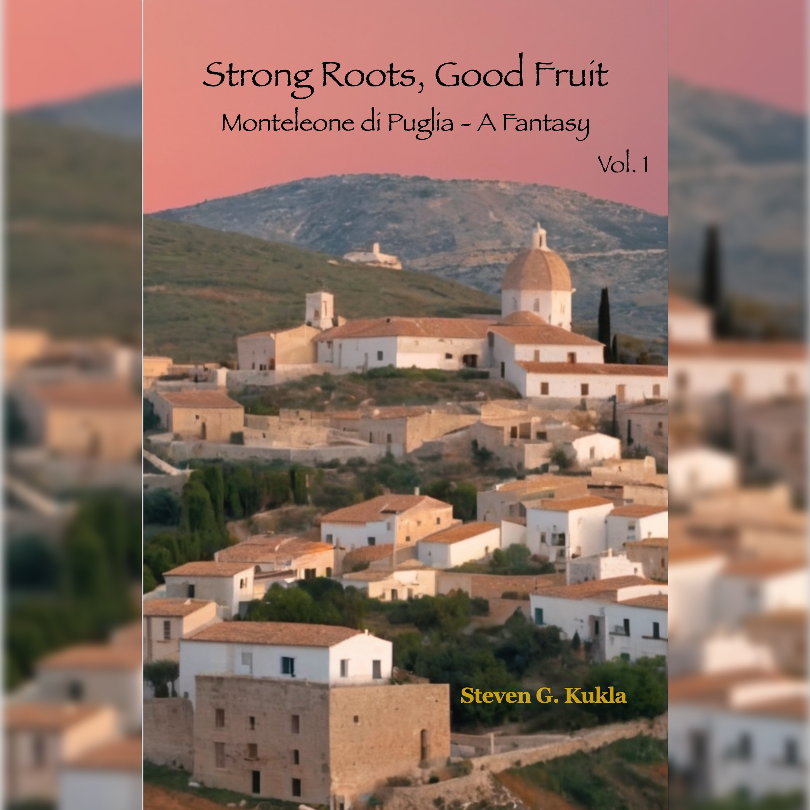
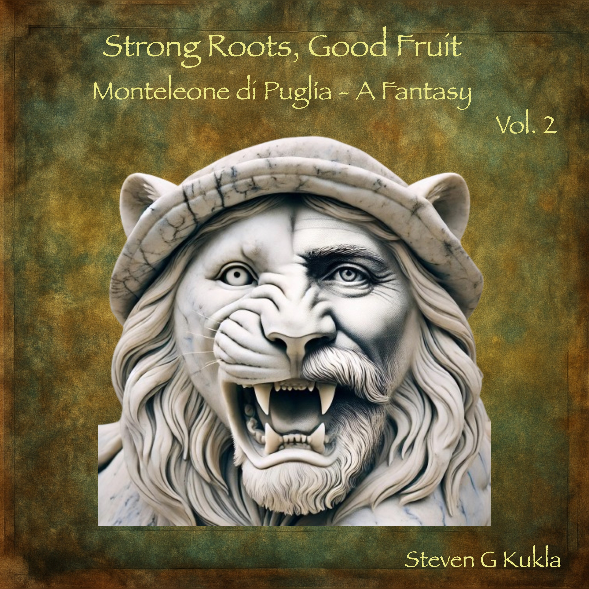

Songs & Albums
Music
The poems of Strong Roots, Good Fruit reimagined as songs
The Albums
Ci scusiamo: solo tre canzoni sono cantate in italiano. Forse un giorno troverò un collaboratore che mi aiuti a creare le versioni italiane degli album.
My book "Strong Roots, Good Fruit" contains over 25 poems, intended as song lyrics. However, I'm not a singer nor musician, so I leveraged AI tools to turn my poems into digital song and music tracks.
My contributions as the AI media composer included: writing the original lyrics, specifying the song structure, arrangement, song styling, vocal and instrument types, while the tool (Suno AI) actually generated what you hear.
The resultant song and music audio files were mastered with the tool MasterChannel, and two albums created and digitally distributed by DistroKid to over 20 online music sites, worldwide, as well as on YouTube.
The songs and instrumentals are now available (sung in English, with only 3 in Italian) to help bring the story to life. I hope you enjoy listening to them as you read the book.

The first album — poems from the book transformed into original songs.

The second album — continuing the musical journey of family, heritage, and memory.
Available on Major Platforms
Distributed by DistroKid to 20+ streaming services worldwide